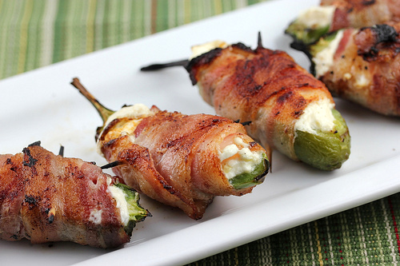

Jalapeño Poppers

Description
The following recipe will guide you through creating one of the most delicious snacks known to mankind. The bacon wrapped jalapeño popper is perfect for a get-together with friends, a day sitting on the couch watching countless hours of football, or if you're hungry for some spicy goodness. The ingredients are easy to find, the process is simple, and the outcome is worth the effort. Just remember to thoroughly wash your hands afterwards...
Ingredients
- 10 Jalapeños
- 1 bar Cream Cheese
- 20 slices of bacon
Steps
- Cut Jalapeños in half lengthwise
- Remove all seeds from the jalapeño halves
- Fill the empty jalapeño halves with cream cheese. Here you can be creative and add other flavors if you like
- Wrap each jalapeño half with a slice of bacon
- Place on a baking sheet covered with aluminum foil and bake at 400F until the bacon is cooked to your liking (~20 minutes for me)
- Let cool, plate, and serve